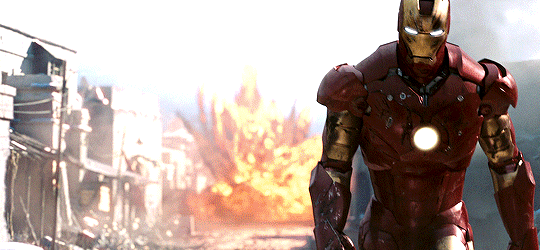
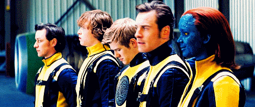
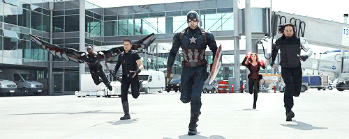
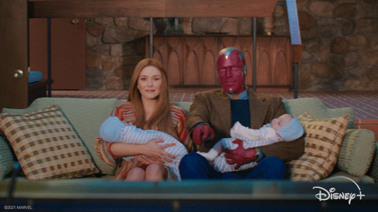
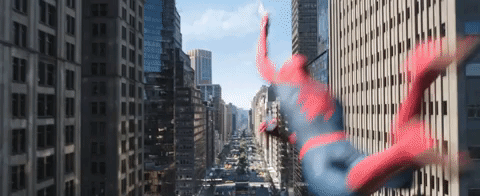
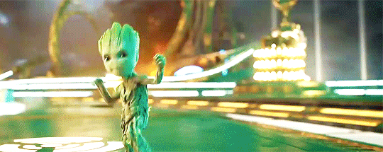
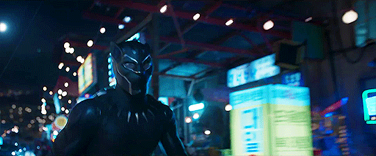
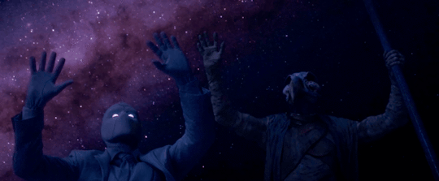
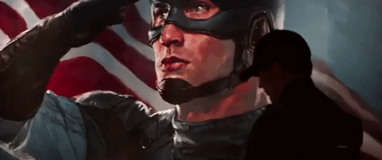
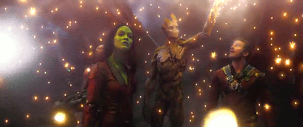

Foi onde tudo começou. O filme transformou um herói pouco conhecido em um fenômeno mundial,
criando a fórmula de ação e humor que a Marvel usa até hoje.

Mostra a origem da amizade e da rivalidade entre o Professor X e o Magneto quando eram jovens.
Mesmo que os filmes dos X-Men não sejam os melhores, esse traz uma nostalgia especial.

Os filmes do Capitão América parecem mais imersivos de alguma forma, tanto por não conterem
magia, quanto por focarem mais em um lado mais hsitórico-político (fictício).

Tirando a parte triste por trás da série, foi muito divertido viajar no tempo
a cada episódio e ver os cenários transformando-se também.

Três homens aranhas!!!

As aventuras no espaço são minhas favoritas, e os filmes dos
Guardiões são sempre mais divertidos e emocionantes.

Tem um dos melhores vilões da Marvel, cenografia impecável e história cativante.

Além de apresentar um personagem não tão conhecido pelo público, a série
traz elementos super interessantes sobre mitologia egípcia.

Basicamente empatado com o Top 1. Um filme de ação e espionagem estilo 007, que eu adoro.
Também possui enredo bem construído e cenas de luta muito bem feitas.

Tem uma das melhores trilhas sonoras, humor e personagens dos filmes da Marvel
(eu gosto bastante do espaço também).